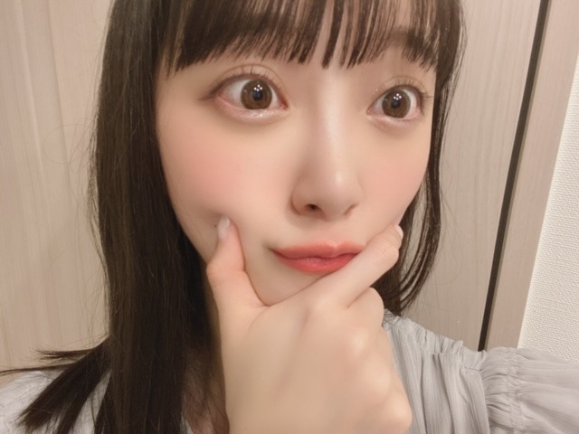
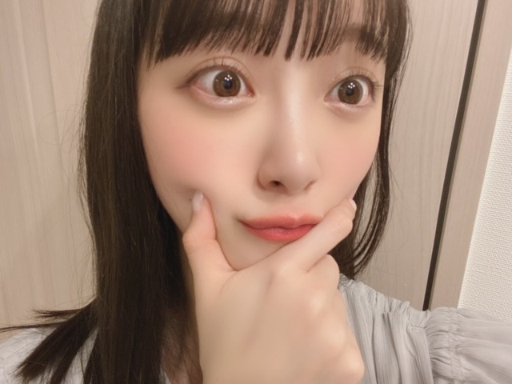

2020/0329Sunニースの夜
エドヴァルド・ムンクの
ニースの夜
という作品が素敵で、好きなので
ホーム画面にしました
ニースは2nd写真集の撮影地で行った街で
小さな街だけど可愛くて本当に素敵だったな~
南フランスは魅力に溢れていて
いつかまた必ず行きたいです
魔女の宅急便みたいな街に住みたいなぁ


朝起きてびっくり
春に雪かぁ
桜と雪の融合、雪桜が幻想的ですね
春なのに雪が降るのはちょっぴり怖いけど...
最近色々と考えるのですが
自分の身は自分で守り、周りの人のことをもちゃんと考えて気遣い合うことが大切ですね。改めて。
早くみなさんに会える日を楽しみに
私も頑張ります!
最後に、変な顔しときます!
これ見て元気出してください!



でははは
エドヴァルド・ムンクの
ニースの夜
という作品が素敵で、好きなので
ホーム画面にしました
ニースは2nd写真集の撮影地で行った街で
小さな街だけど可愛くて本当に素敵だったな~
南フランスは魅力に溢れていて
いつかまた必ず行きたいです
魔女の宅急便みたいな街に住みたいなぁ
朝起きてびっくり
春に雪かぁ
桜と雪の融合、雪桜が幻想的ですね
春なのに雪が降るのはちょっぴり怖いけど...
最近色々と考えるのですが
自分の身は自分で守り、周りの人のことをもちゃんと考えて気遣い合うことが大切ですね。改めて。
早くみなさんに会える日を楽しみに
私も頑張ります!
最後に、変な顔しときます!
これ見て元気出してください!

でははは
2020/03/29 17:12
コメント(347)
みおたんきゃわたん♡
可愛すぎます！！
おつかれさまです！
おつかれさまです！
未央奈ちゃん、こんばんは
ニースの夜、画像検索してみました
夜だけあって少し寂しげな街並みだけど、素敵な絵だと思いました
余談ですが、画像検索した時、画面を下にスクロールしたら、未央奈ちゃんのこのブログも出てきました
ニースの夜って検索結果で、画像付きのブログだったからヒットしたのかな
手洗い、うがいと自分に出来ることは出来るだけしてるけど、不特定多数の人が触るドアノブとかは塞ぎ切れないし、仕方ない部分もあるけど、自分の為、家族の為に出来る事は頑張らなきゃね
握手会も延期になってきてるし、早く明るい話題が欲しいね
ちなみに、僕は携帯の待ち受けは大黒様にしてます
福とお金が舞い込むように
神頼みｗｗ
じゃぁ、またね
ニースの夜、画像検索してみました
夜だけあって少し寂しげな街並みだけど、素敵な絵だと思いました
余談ですが、画像検索した時、画面を下にスクロールしたら、未央奈ちゃんのこのブログも出てきました
ニースの夜って検索結果で、画像付きのブログだったからヒットしたのかな
手洗い、うがいと自分に出来ることは出来るだけしてるけど、不特定多数の人が触るドアノブとかは塞ぎ切れないし、仕方ない部分もあるけど、自分の為、家族の為に出来る事は頑張らなきゃね
握手会も延期になってきてるし、早く明るい話題が欲しいね
ちなみに、僕は携帯の待ち受けは大黒様にしてます
福とお金が舞い込むように
神頼みｗｗ
じゃぁ、またね
未央奈、ブログ更新ありがとう〜
未央奈の変顔で元気出たわー
2nd写真集めっちゃ楽しみだぁー
未央奈大好き
もるもっと
未央奈の変顔で元気出たわー
2nd写真集めっちゃ楽しみだぁー
未央奈大好き
もるもっと
堀ちゃんのブログと笑顔が最高の癒しだね(^○^)毎日コロナのニュースでで気重くなるけど堀ちゃんの笑顔で明日からも仕事とか頑張れますよ❗️堀ちゃんも明日からも頑張ろーね(^.^)
ブログ更新ありがとーー！！
ブログ更新ありがとう！
大好きです！！
変顔良きかな
ｗｗｗｗｗ
みおなーーーーーーーーーー！！
ｗｗｗｗｗｗｗｗｗｗ
みおなーーーーーーーーーー！！
ｗｗｗｗｗｗｗｗｗｗ
未央奈さん、ブログ更新ありがとうございます！！！！東京は春なのに雪が降ったんですね。自分の地元は雪は降ってなかったけど、外に出ると寒かったです。
ついさっきまで古い時代(？)のバイオハザードのゲームをやっていて、なかなかクリア出来なくて、拗ねていました！((いや聞いてねぇよ⊂( ･∀･)彡ｶﾞｯ☆`Дﾟ)
いつも思ってて何も言わなかったけど、やっぱり未央奈さんがブログで載せる写真がめっちゃ可愛くて、ブログに載ってる写真を見る度に癒されます！
ちょ〜どうでもいい話をしてしまってすいません笑(何笑ってんだよ……)
それではまたブログ更新した時に〜。ε=(*`>ω<)ﾉｼﾞｬｧﾈ
ついさっきまで古い時代(？)のバイオハザードのゲームをやっていて、なかなかクリア出来なくて、拗ねていました！((いや聞いてねぇよ⊂( ･∀･)彡ｶﾞｯ☆`Дﾟ)
いつも思ってて何も言わなかったけど、やっぱり未央奈さんがブログで載せる写真がめっちゃ可愛くて、ブログに載ってる写真を見る度に癒されます！
ちょ〜どうでもいい話をしてしまってすいません笑(何笑ってんだよ……)
それではまたブログ更新した時に〜。ε=(*`>ω<)ﾉｼﾞｬｧﾈ
ブログ更新ありがとー❤️
どの写真もめっちゃ可愛い～
癒されるし、元気でます！
デコだしかっこいい
ウインク好き！
後、未央奈ちゃんの考え方好き！自分の身は自分で守る！って当たり前だけど、大事なことだよね！
改めて本当に大好き
どの写真もめっちゃ可愛い～
癒されるし、元気でます！
デコだしかっこいい
ウインク好き！
後、未央奈ちゃんの考え方好き！自分の身は自分で守る！って当たり前だけど、大事なことだよね！
改めて本当に大好き
前髪ないのめっっちゃタイプ！！
とっても綺麗︎☺︎︎☺︎
とっても綺麗︎☺︎︎☺︎
未央奈可愛すぎる！！
元気出る！！
未央奈マジ天使！！
元気出る！！
未央奈マジ天使！！
ニースの夜どんなやつか検索してみる！！南フランスめちゃくちゃいいとこそうだなぁ。みおちゃんの写真集ロケ地巡りしたい笑笑 魔女の宅急便の街もいいよね！ヨーロッパの街って全部がおしゃれ！！そういえば2022年に魔女の宅急便イメージしたテーマパーク、ジブリパークが愛知にできるみたい！！めちゃくちゃ楽しみだぁ！！みおちゃんに会えないのが本当に辛くて、、でもその変顔とか、可愛いインスタとか755ですごく元気が出る！いつもありがとう！！大好きです！
ももんが
ももんが
ニースの夜どんなやつか検索してみる！！南フランスめちゃくちゃいいとこそうだなぁ。みおちゃんの写真集ロケ地巡りしたい笑笑 魔女の宅急便の街もいいよね！ヨーロッパの街って全部がおしゃれ！！そういえば2022年に魔女の宅急便イメージしたテーマパーク、ジブリパークが愛知にできるみたい！！めちゃくちゃ楽しみだぁ！！みおちゃんに会えないのが本当に辛くて、、でもその変顔とか、可愛いインスタとか755ですごく元気が出る！いつもありがとう！！大好きです！
ももんが
ももんが
未央奈ちゃんこんばんは‼ありがとうございます！頑張ります‼素敵です！頑張ります‼ありがとうございます‼楽しみにしてます‼
この時期の都心の雪
三十何年かぶりとかニュースで
言ってたよ…………とにかく寒い
堀ちゃんが変顔してもかわいいし
でははは☺️
堀ちゃん、ブログ更新ありがとう〜
4月に雪、びっくりだねー
すぐやんじゃったけど、おもむきあって
綺麗だったよねー
僕も気をつけるから、
堀ちゃんも体調気をつけねー
堀ちゃん、変顔もかわいいからすごいねー
堀ちゃん、大好きだよー
4月に雪、びっくりだねー
すぐやんじゃったけど、おもむきあって
綺麗だったよねー
僕も気をつけるから、
堀ちゃんも体調気をつけねー
堀ちゃん、変顔もかわいいからすごいねー
堀ちゃん、大好きだよー
毎日かわいいありがとう
未央奈ちゃんブログ更新ありがとう！
インスタに投稿してくれたアナスターシャの動画ものすごく素敵でした(；；)
ダンスがしなやかできれいで、、何回も見てしまいました
たくさん最近辛いこともあるし大変だけど未央奈ちゃんのSNSみたり、アルバムに入ってる写真みたり、ファースト写真集見返してたりすると元気でてくるんですありがとう！
これからもがんばってください！
インスタに投稿してくれたアナスターシャの動画ものすごく素敵でした(；；)
ダンスがしなやかできれいで、、何回も見てしまいました
たくさん最近辛いこともあるし大変だけど未央奈ちゃんのSNSみたり、アルバムに入ってる写真みたり、ファースト写真集見返してたりすると元気でてくるんですありがとう！
これからもがんばってください！
日に日に美人になっててもはやびっくりしてます
可愛いみおな！
よし！元気でた！
前髪作ってない堀ちゃん好きだなー。かわいい。
質問
好きな男性の服装は？髪型は？
ライブ前に心がけていることは？
緊張することは好き？
以上です。
ブログ更新ありがとうございます！
今年度もお願いします！
好きな男性の服装は？髪型は？
ライブ前に心がけていることは？
緊張することは好き？
以上です。
ブログ更新ありがとうございます！
今年度もお願いします！
私も未央奈ちゃんの影響で映画をたくさん見るようになりました！ありがとう
更新ありがとう‼︎
寒すぎて体調崩しそうですね(-_-)
変顔？のおかげで元気が出ました‼︎
毎日ように更新してくれて、感謝しかないです
いつも元気をありがとうございます
寒すぎて体調崩しそうですね(-_-)
変顔？のおかげで元気が出ました‼︎
毎日ように更新してくれて、感謝しかないです
いつも元気をありがとうございます
変顔が可愛くて
変顔かなって無い
すっぴんも可愛い堀未央奈さん
ブログ更新ありがとう⁉︎(^^)
東京は雪なんですね⁉︎
未央奈ちゃんの肌の色と
雪の色どちらが白いかな⁇
握手会行きたいなぁ〜〜(^^)
変顔かなって無い
すっぴんも可愛い堀未央奈さん
ブログ更新ありがとう⁉︎(^^)
東京は雪なんですね⁉︎
未央奈ちゃんの肌の色と
雪の色どちらが白いかな⁇
握手会行きたいなぁ〜〜(^^)
みおないつもブログありがとう
みおないつもブログありがとう
ブログ更新ありがとー！
いつもたくさんブログ更新ありがとう！毎回読むたび嬉しいし元気になります！
未央奈さんも体調に気をつけてくださいね
いつもたくさんブログ更新ありがとう！毎回読むたび嬉しいし元気になります！
未央奈さんも体調に気をつけてくださいね
かわいい
JC3のひよこです
可愛すぎる未央奈ちゃん
変な顔すら可愛すぎる
写真集買うね
握手会行きたいです
ひよこの名札つけてくので覚えててくれたら嬉しいです
《質問》
どんな髪型の女子が好き？
じゃあまた
可愛すぎる未央奈ちゃん
変な顔すら可愛すぎる
写真集買うね
握手会行きたいです
ひよこの名札つけてくので覚えててくれたら嬉しいです
《質問》
どんな髪型の女子が好き？
じゃあまた
早速、ニースの夜、調べました。
グリーンのグラデーションが綺麗な静か
な風景画ですね。
風景と言っても、シンプルに描かれて
いて、パッチワークのようなデザイン画
のようでもありますね。
みおなちゃんは、部屋に灯る明かりが
お好みですか？
みおなちゃん、おでこ可愛い。
変顔ありがとう。
でも、先週の乃木中見てから、凄く元気
です。
グリーンのグラデーションが綺麗な静か
な風景画ですね。
風景と言っても、シンプルに描かれて
いて、パッチワークのようなデザイン画
のようでもありますね。
みおなちゃんは、部屋に灯る明かりが
お好みですか？
みおなちゃん、おでこ可愛い。
変顔ありがとう。
でも、先週の乃木中見てから、凄く元気
です。
変顔も可愛い
でこ出しにするとグッと大人っぽくなっていいですねぇ〜。
思わず見惚れてしまいました
(いや、どんな髪型でも見惚れてるんやけど
普段あんまり見んけん、おーってなって)
変顔(全部可愛い)にとても元気もらいました！！
いつかどこかでお会い出来ると信じて
頑張ります！
それでは
思わず見惚れてしまいました
(いや、どんな髪型でも見惚れてるんやけど
普段あんまり見んけん、おーってなって)
変顔(全部可愛い)にとても元気もらいました！！
いつかどこかでお会い出来ると信じて
頑張ります！
それでは
今日の朝魔女の宅急便のロケ地どのなんだろ〜〜行きたいなあって妹とママと話してた！！ヨーロッパのへんかなあ、、？って！でね、
そういうの興味なさそうなパパが行ってみたい〜とか言い出して女3人えっ！！ってなって笑った平和な朝でした〜〜
今日は新しい服3枚買った！！かわいい服多すぎてめっちゃ迷った〜〜いつまででも見てられそう〜〜その辺歩いてる人の服装とか見てあれかわいい〜〜ってよくなる、、！！どこにあるとかって見えてくる魔法が欲しいなあ未央奈の着てる服かわいいからいつも参考にしてる！！写真でもどこのか分かる魔法が欲しい！！！
そういうの興味なさそうなパパが行ってみたい〜とか言い出して女3人えっ！！ってなって笑った平和な朝でした〜〜
今日は新しい服3枚買った！！かわいい服多すぎてめっちゃ迷った〜〜いつまででも見てられそう〜〜その辺歩いてる人の服装とか見てあれかわいい〜〜ってよくなる、、！！どこにあるとかって見えてくる魔法が欲しいなあ未央奈の着てる服かわいいからいつも参考にしてる！！写真でもどこのか分かる魔法が欲しい！！！
ブログ更新ありがとう！
優しさに溢れている未央奈ちゃん大好きすぎる…(;_;)私も自分を大切にしつつ周りに気遣うことを意識しながら生活しなきゃ。
載せてくれた写真全部、変な顔どころかひたすらに可愛い！笑
ムンクの叫びのイメージが強い画家だけど、ニースの夜、青の移り変わりが素敵。ヨーロッパは街並みそのものが物語の中みたいで素敵だよね。
未央奈ちゃんに会える日を楽しみに、私も頑張ります。
未央奈ちゃん達が何事もなく平和に過ごせるよう願っています。
優しさに溢れている未央奈ちゃん大好きすぎる…(;_;)私も自分を大切にしつつ周りに気遣うことを意識しながら生活しなきゃ。
載せてくれた写真全部、変な顔どころかひたすらに可愛い！笑
ムンクの叫びのイメージが強い画家だけど、ニースの夜、青の移り変わりが素敵。ヨーロッパは街並みそのものが物語の中みたいで素敵だよね。
未央奈ちゃんに会える日を楽しみに、私も頑張ります。
未央奈ちゃん達が何事もなく平和に過ごせるよう願っています。
絵とか興味あるんだ！魔女宅言いよね！
雪きれいだった〜
変顔、元気でたー！！ありがとーー！！！
変顔、元気でたー！！ありがとーー！！！
ほんとマメだね笑 大尊敬します！堀ちゃん大好き！！
可愛くて変顔に見えないよ笑笑^_^
そんな未央奈から元気もらったから、会えない日々を乗り越えられるかな(^-^)
でもやっぱり会いたいぜよ*\(^o^)/*笑
そんな未央奈から元気もらったから、会えない日々を乗り越えられるかな(^-^)
でもやっぱり会いたいぜよ*\(^o^)/*笑
未央奈ちゃん、関東は雪が降ってたみたいだね。
俺の所は晴れてたよ〜。まだまだ寒いけどね。
早く未央奈ちゃんに会いたいな〜
変顔の写真面白い
俺の所は晴れてたよ〜。まだまだ寒いけどね。
早く未央奈ちゃんに会いたいな〜
変顔の写真面白い
お疲れ様です！
未央奈見れただけで元気凄い出たのに、さらに変な顔まで…！！
ありがとうございます！笑
いつもブログ楽しみで、大好きです！
これからも頑張ってください！
音楽番組、全部リアルタイムで見てます！
バズリズムは、私が住んでるとこ関西なので、まだ見れてませんが！！笑
ライブライブも、Mステも、次のブログも楽しみにしています！
これからも頑張ってください！
未央奈見れただけで元気凄い出たのに、さらに変な顔まで…！！
ありがとうございます！笑
いつもブログ楽しみで、大好きです！
これからも頑張ってください！
音楽番組、全部リアルタイムで見てます！
バズリズムは、私が住んでるとこ関西なので、まだ見れてませんが！！笑
ライブライブも、Mステも、次のブログも楽しみにしています！
これからも頑張ってください！
変な顔ってどんな顔か知ってる？
未央奈の場合めちゃくちゃかわいいのよ。
大好き
未央奈の場合めちゃくちゃかわいいのよ。
大好き
ブログ更新ありがとう
未央奈ちゃん変顔も可愛い
未央奈ちゃん変顔も可愛い
ブログ更新ありがとう～
変顔の写真、思わず笑っちゃた！笑笑
寒いから体調に気を付けて！
変顔の写真、思わず笑っちゃた！笑笑
寒いから体調に気を付けて！
未央奈さんブログ更新ありがと〜！
魔女の宅急便、いいよね〜あの感じ、日本にはない感じだよね〜！
ん〜〜〜、かわいいよ！！！
すんごくかわい、元気もらった！☺︎︎︎︎
魔女の宅急便、いいよね〜あの感じ、日本にはない感じだよね〜！
ん〜〜〜、かわいいよ！！！
すんごくかわい、元気もらった！☺︎︎︎︎
お疲れ様なのです└(ﾟ∀ﾟ└) (┘ﾟ∀ﾟ)┘
体調に気を付けてね
んじゃね～！(Σ⊂(ﾟДﾟ )
体調に気を付けてね
んじゃね～！(Σ⊂(ﾟДﾟ )


東京雪降ってるね…春に雪って幻想的よね(笑)
未央奈ちゃんも体調には気をつけてお仕事とか頑張ってね！
またね！